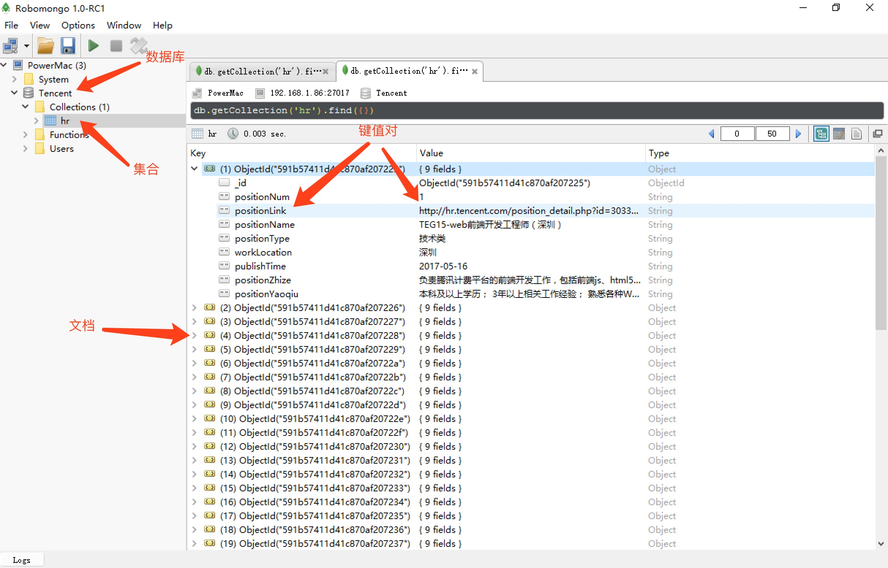

MongoDB快速入门
MongoDB 将数据存储为一个文档，数据结构由键值(key=>value)对组成。MongoDB 文档类似于 JSON 对象。字段值可以包含其他文档，数组及文档数组。

1. 数据库
数据库是一个集合的物理容器。一个单一的MongoDB服务器通常有多个数据库。如自带的admin、test，或自行创建的数据库。
2. 集合
文档组，类似于关系数据库中的表格。
集合存在于数据库中，一个数据库可以包含很多个集合。集合没有固定的结构，这意味着你在对集合可以插入不同格式和类型的数据，但通常情况下我们插入集合的数据都会有一定的关联性。
比如，我们可以将以下不同数据结构的文档插入到集合中：
{"site":"www.baidu.com"}
{"site":"www.google.com","name":"Google"}
{"site":"www.itcast.cn","name":"传智播客","num":100}
当第一个文档插入时，集合就会被创建。
3. 文档
文档是一组键 - 值对。

RDBMS VS MongoDB
下面给出的表显示RDBMS(关系型数据库管理系统)术语 与 MongoDB 的关系
| SQL术语/概念 | MongoDB术语/概念 | 解释/说明 |
|---|---|---|
| database | database | 数据库 |
| table | collection | 数据库表/集合 |
| row | document | 数据记录行/文档 |
| column | field | 数据属性/字段(域) |
| index | index | 索引 |
| primary key | primary key | 主键,MongoDB默认自动将_id字段设置为主键,可以手动设置 |
通过下图实例，我们也可以更直观的的了解Mongo中的一些概念：

示例文档
下面给出的示例显示了一个博客网站，这是一个类似于 JSON 对象键值对文档结构。
{
_id: ObjectId("57146ec5de7375577083d127")
title: 'MongoDB Overview',
description: 'MongoDB is no sql database',
by: 'itcast.cn',
url: 'http://www.itcast.cn',
tags: ['mongodb', 'database', 'NoSQL'],
likes: 100,
comments: [
{
user:'user1',
message: 'My first comment',
dateCreated: new Date(2017,4,20,2,15),
like: 0
},
{
user:'user2',
message: 'My second comments',
dateCreated: new Date(2017,4,25,7,45),
like: 5
}
]
}
数据库命令
- 连接成功后，默认使用test数据库
- 查看当前数据库名称
> db
- 查看所有数据库名称，列出所有在物理上存在的数据库
> show dbs
- 切换数据库，如果数据库不存在也并不创建，直到插入数据或创建集合时数据库才被创建
> use 数据库名称
- 删除当前指向的数据库，如果数据库不存在，则什么也不做
> db.dropDatabase()